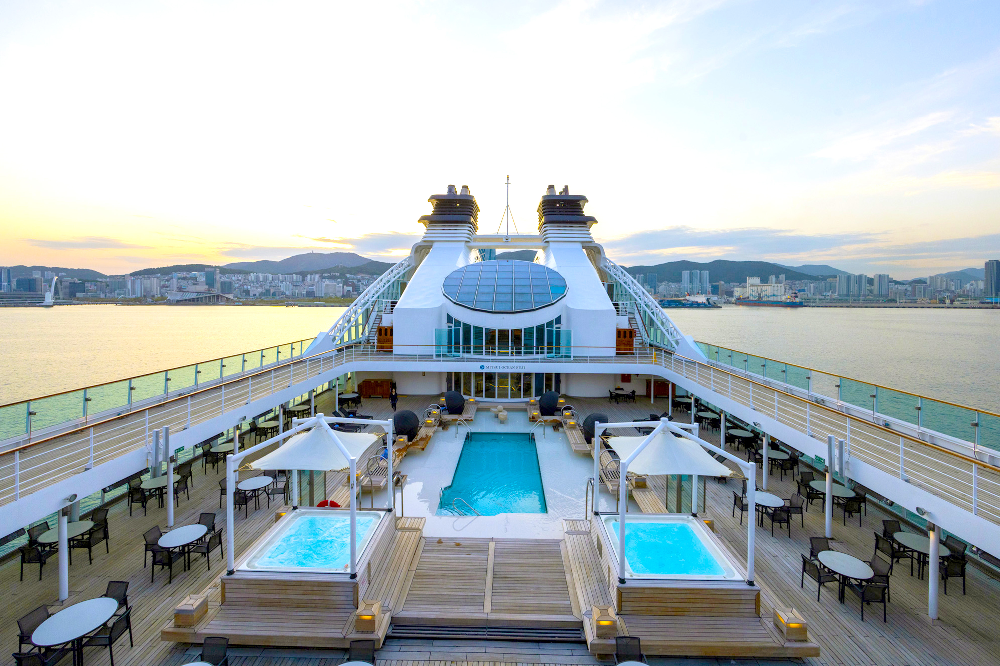

三井海洋郵輪 FUNATABI 〜 與日本的美麗邂逅
日本，是一個四面環海的國度。 對日本而言，海洋自古以來便象徵著豐饒的大自然，也承載著對遙遠世界與旅程的嚮往。
我們懷抱榮耀與初心，隆重推出由三井集團承襲深厚航運底蘊所打造的全新郵輪品牌——三井海洋郵輪。 此名不僅彰顯三井引以為傲的日本海事傳統，更寄託著自蔚藍大海啟航、邁向未來的希望與憧憬。
我們珍視根植於自然與四季流轉之中的日本之美， 讓傳統文化的精髓在旅途中悄然流轉、相互輝映。
船上以精緻而雅緻的空間設計， 結合細膩真誠的「おもてなし（Omotenashi）」款待之心， 為每一位旅客帶來安心、舒適且充滿喜悅的海上時光， 在靜謐與優雅之中，展開一段難以忘懷的美好航程。
商船三井郵輪的足跡
商船三井郵輪的起源，可追溯至 1884 年大阪商船的創立。
1890年 ，大阪—釜山航線正式開航，隨後航線版圖逐步拓展至北美與歐洲。 商船三井也自此穿梭於世界各地的海洋，承載旅人往返，累積超過一世紀的航海經驗。
其中，行駛於南洋航線的「阿根廷丸」與「巴西丸」，以優雅的外觀與豪華內裝廣受矚目；而初代「日本丸」更於 1973 年完成日本史上首次世界一周郵輪航行， 在日本郵輪旅行的歷史上留下深刻的一頁。
「日本丸」之名其後代代相承，1990 年第三代船舶正式就航，以精緻餐飲與高品質娛樂廣受好評，至今仍持續航行於世界各地。
自 2024 年 12 月起，全新船舶 MITSUI OCEAN FUJI（三井海洋富士號） 正式加入船隊，與「日本丸」共同組成雙船體制， 為來自日本與世界各地的旅客，持續呈獻屬於日本的美好海上旅程。
重要里程碑
1884年
大阪商船創立
1890年
首條海外航線「大阪—釜山」開航
1909年
香港—三藩市航線首航，「龍田丸」就航
1916年
南洋航線首航，「安藝丸」就航
1925年
日本首艘大型外航柴油郵輪「香取丸」就航
1939年
「阿爾卑斯丸」「巴西丸」就航
1958年
第二代「阿爾卑斯丸」就航
1970年
商船三井郵輪正式成立，成為日本郵輪專營公司
1972年
第二代「阿爾卑斯丸」改裝為純郵輪，並更名為初代「日本丸」
1973年
初代「日本丸」完成日本首度世界一周郵輪航行
1977年
第二代「日本丸」就航
1989年
「富士丸」就航
1990年
第三代「日本丸」就航
2010年
「日本丸」大規模改裝，船體改為白色為主調
2013年
「富士丸」退役
2020年
「日本丸」全新翻修，新增可容納六人的概念客房
2023年
承襲商船三井郵輪事業的航海底蘊，MITSUI OCEAN CRUISES 品牌誕生
2024年
「MITSUI OCEAN FUJI（三井海洋富士號）」正式啟航
